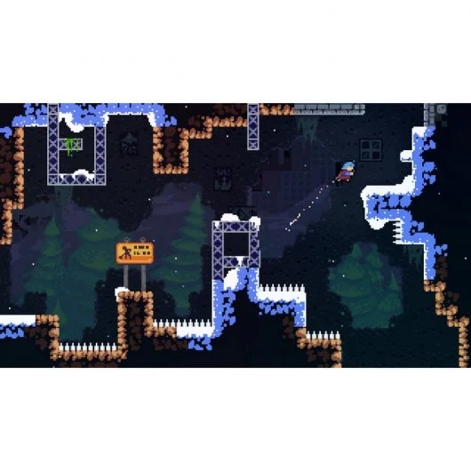
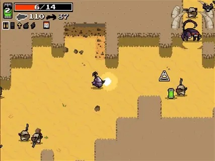
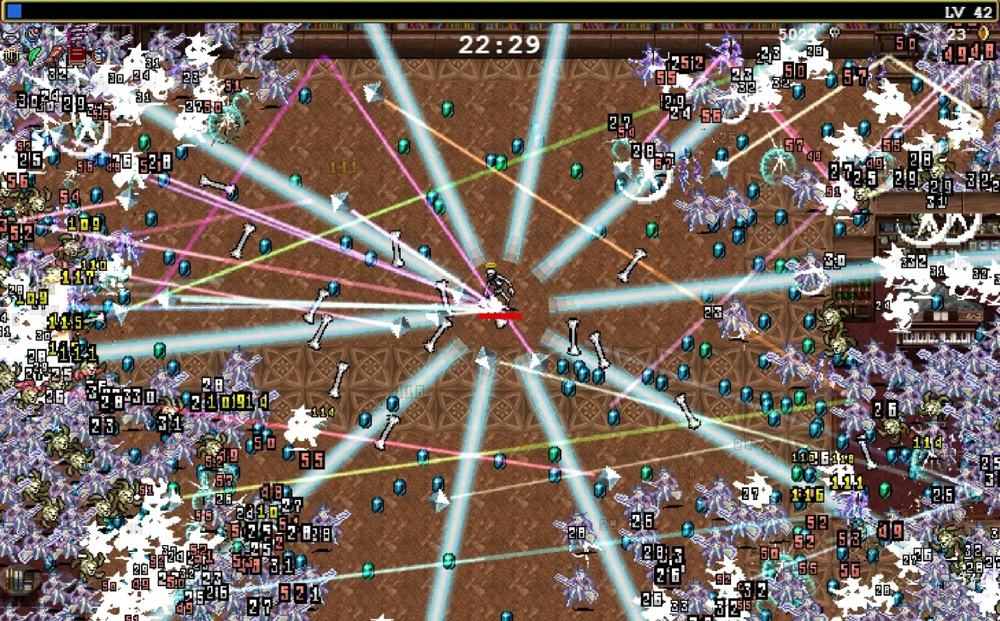
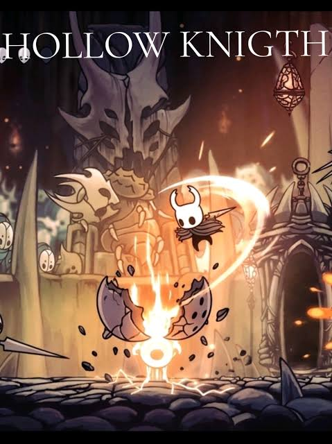
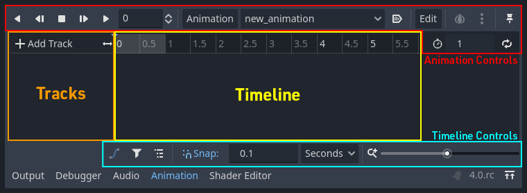

El juego se siente vivo
Animación, AnimationPlayer, Tween, sonido y game feel: la capa que no cambia las reglas, pero cambia todo lo que se siente al jugar.
“Las reglas del survivors ya están. Falta que cada bala, cada golpe y cada slime que cae se note.”
Las etiquetas Godot · demo NN indican que esa idea se muestra funcionando en el proyecto semana-05/proyecto-clase. Las demos se miran: el código se escribe en el TP.
Misma bala, mismo slime, dos sensaciones
A · sin respuestaLa bala llega y el slime desaparece. Correcto, pero mudo.
B · con respuestaFlash rojo, un temblor, partículas, un sonido. El slime cae.
recibir_dano() y morir(). La diferencia es el juice: la respuesta sensorial que confirma que la acción pasó. En Godot, la demo 11 muestra el survivors en el nivel 0 y en el 7.Game feel: cada acción tiene una respuesta
El jugador hace algo; el juego contesta. Si la respuesta es clara, rápida y proporcional, el juego “se siente bien”. Si falta, se siente roto, aunque funcione.
| Capa | Qué aporta | Herramienta |
|---|---|---|
| 👁️ Animación | Que las cosas se muevan con intención | AnimatedSprite2D, AnimationPlayer, Tween |
| 🔊 Sonido | Confirmar sin mirar | AudioStreamPlayer |
| 💥 Efectos | Exagerar lo importante | flash, temblor, pausa, partículas |
📏 Tres preguntas para cada respuesta
- ¿Se nota? Si el jugador no la percibe, no existe.
- ¿Es inmediata? Un sonido que llega 0.3 s tarde se siente como un error.
- ¿Es proporcional? Matar un slime no puede sacudir la pantalla como morir.
Cuatro juegos que enseñan game feel

🏔️ Celeste
Cada salto y cada dash tiene animación, partículas, sonido y un pequeño temblor. El estándar del género.

🔫 Nuclear Throne
Vlambeer y el screenshake: la pantalla golpea con cada disparo. Las armas se sienten pesadas.

🧛 Vampire Survivors
Cientos de enemigos, y cada uno parpadea al recibir daño. Las gemas suenan al juntarlas. Pura respuesta.

🐞 Hollow Knight
Al pegar o recibir un golpe, el juego se congela unas centésimas (hit stop). El golpe pesa.
Capturas: © Maddy Makes Games, Vlambeer, poncle y Team Cherry. Uso educativo.
Dos charlas clásicas, cortas y con ejemplos en vivo
“Juice it or lose it”
Martin Jonasson y Petri Purho, 2012 · unos 15 min. Un Breakout aburrido que, efecto por efecto, se vuelve una fiesta. Lo mismo que la demo 11.
“The art of screenshake”
Jan Willem Nijman (Vlambeer), 2013 · unos 30 min. Un shooter plano que gana peso con más de 30 trucos chicos: temblor, retroceso, pausa, casquillos.
AnimatedSprite2D: la animación por frames
Una serie de imágenes que se muestran en secuencia, como un flipbook. Ya está en el caballero (idle, run) y en los slimes (caminar).
- Se arma en el editor: SpriteFrames → animaciones con nombre → frames de una hoja
- Desde el código se elige cuál se reproduce, según lo que pasa
- Señal útil:
animation_finished, para encadenar (por ejemplo, “morir” y recién después borrar)
# en el _physics_process del jugador # el orden es la PRIORIDAD: lo más importante primero if golpeado: $AnimatedSprite2D.play("golpe") elif direccion != Vector2.ZERO: $AnimatedSprite2D.play("run") $AnimatedSprite2D.flip_h = direccion.x < 0 else: $AnimatedSprite2D.play("idle")
play() en cada frame con la misma animación no la reinicia: Godot sigue desde donde estaba. Por eso este patrón funciona.Demo 01: caminando, G muestra el golpe. Con O se invierte el orden de los if y el golpe ya no se ve.
AnimationPlayer: animar cualquier propiedad
No solo sprites: posición, escala, color, opacidad, el texto de un Label, el volumen de un sonido… de cualquier nodo de la escena.
- Trabaja con una línea de tiempo y keyframes: se marcan algunos valores y Godot calcula los del medio
- Se arma en el editor: se ve, se ajusta y se prueba sin tocar código
- Desde el código, una línea:
$AnimationPlayer.play("golpe")

El parpadeo de daño del caballero
- Hijo del
Jugador: unAnimationPlayer - Panel Animation → New → nombre
golpe, largo0.4s - Seleccionar el
AnimatedSprite2D, y en el Inspector, la llave 🔑 al lado de Modulate: agrega un keyframe - Keyframes cada 0.1 s: blanco · rojo · blanco · rojo · blanco
- En
recibir_dano():$AnimationPlayer.play("golpe")
🎞️ La línea de tiempo
⚪
🔴
⚪
🔴
⚪
Terminar en blanco es obligatorio: la animación deja la propiedad con el valor del último keyframe.
Tween: una animación que se escribe en una línea
# flash: rojo de golpe, y vuelve a blanco en 0.15 s $AnimatedSprite2D.modulate = Color(1, 0.3, 0.3) var tween = create_tween() tween.tween_property($AnimatedSprite2D, "modulate", Color.WHITE, 0.15) # "pop": se infla y se desvanece; al final, se borra var t = create_tween() t.tween_property(self, "scale", Vector2(1.5, 1.5), 0.1) t.tween_property(self, "modulate:a", 0.0, 0.15) t.tween_callback(queue_free)
Tween: flash, pop, salto, aplastar y girar. Con T cambia la curva (set_trans): TRANS_BACK o TRANS_ELASTIC se sienten vivos; TRANS_LINEAR, mecánico.Cómo se lee
tween_property(nodo, "propiedad", valor final, segundos)- Los pasos van uno detrás del otro, en orden
"modulate:a"es solo la opacidad del colortween_callback()llama a una función cuando llega su turno
Tween se crea, anima y desaparece solo. No hay que agregar ningún nodo a la escena.¿Cuál de los tres?
| Herramienta | Sirve para | Se arma | En el survivors |
|---|---|---|---|
AnimatedSprite2D | Cambiar el dibujo: frames de una hoja | En el editor (SpriteFrames) | Caminar, quieto |
AnimationPlayer | Una secuencia fija de cambios de propiedades, siempre igual | En el editor (línea de tiempo) | Parpadeo del jugador al recibir daño |
Tween | Un cambio corto que depende de algo que se sabe al jugar | En el código | Flash del slime, pop al morir, temblor de cámara |
AnimationPlayer. Si depende de dónde, cuánto o hacia dónde (una dirección al azar, una posición del momento), Tween.Los nodos de audio y los formatos
| Nodo | Cuándo se usa |
|---|---|
AudioStreamPlayer | Audio sin posición: música de fondo, efectos de la interfaz, y casi todo en un juego de una sola pantalla como el survivors. |
AudioStreamPlayer2D | Audio con posición en el mundo: suena más fuerte cerca de la cámara y se escucha de qué lado viene. |
AudioStreamPlayer3D | Lo mismo, en 3D. |
.ogg para la música (pesa poco), .wav para los efectos cortos (arrancan sin demora). El .mp3 también funciona en Godot 4..wav) → Reimport.Reproducir un efecto, y que no canse
# jugador.gd: hijos SfxDisparo y SfxGolpe (AudioStreamPlayer) func disparar(): ... $SfxDisparo.pitch_scale = randf_range(0.9, 1.1) $SfxDisparo.play() func recibir_dano(cantidad): vida -= cantidad $SfxGolpe.play()
La música es otro AudioStreamPlayer, en la Arena, con Autoplay activado. No hace falta código.
🎲 El truco del pitch_scale
El arma dispara 150 veces por minuto. El mismo sonido idéntico se vuelve una ametralladora de juguete. Variar el tono un 10% al azar lo hace sonar distinto cada vez, con un solo archivo.
El slime muere… y se lleva su sonido
❌ Así no suena nunca
func morir(): $SfxMuerte.play() queue_free() # borra el slime… # …y a su hijo SfxMuerte
Un nodo de audio es un hijo: si se borra el padre, se borra él, en el mismo frame en que empezó a sonar.
✅ Esperar a que termine de sonar
func morir(): $SfxMuerte.play() hide() # ya no se ve… set_deferred("monitorable", false) # …ni choca… remove_from_group("enemigo") # …ni es blanco await $SfxMuerte.finished # la señal: "terminé" queue_free() # recién ahora
El slime “muere” para el jugador al instante, pero el nodo vive 0.16 s más: lo que dura el plop.
sumar_kill()). La demo 05 compara las tres formas. Y lo mismo pasa con las partículas: si son hijas del slime, se borran con él.Cuando termina una cosa, empieza la otra
Casi todo lo que dura un tiempo avisa con una señal cuando termina. Esa señal es el desencadenante del paso siguiente.
| Quién | Avisa “terminé” con |
|---|---|
AnimatedSprite2D | animation_finished (sin loop) |
AnimationPlayer | animation_finished |
AudioStreamPlayer | finished |
Tween | finished o tween_callback() |
CPUParticles2D | finished (one shot) |
Timer | timeout |
# jugador.gd: la muerte, paso a paso func morir(): $AnimatedSprite2D.play("morir") await $AnimatedSprite2D.animation_finished $SfxGameOver.play() await $SfxGameOver.finished $CartelGameOver.show() await get_tree().create_timer(1.5).timeout get_tree().change_scene_to_file("res://game_over.tscn")
await pausa solo esta función hasta que llega la señal; el resto del juego sigue. Sin esperar, las cuatro cosas pasan en el mismo frame y se pisan: en la demo 06, la tecla X lo muestra.Buses: música y efectos por separado
Panel Audio (abajo, al lado de Output): canales de volumen independientes. Cada AudioStreamPlayer elige su Bus en el Inspector.
- Master: el volumen general
- Musica: solo la música
- Efectos: disparos, golpes, clics
var bus = AudioServer.get_bus_index("Musica") AudioServer.set_bus_volume_db(bus, linear_to_db(0.5)) # 50 %

HSlider en el menú.Screenshake: la cámara tiembla
# jugador.gd: la Arena tiene una Camera2D llamada Camara func sacudir_camara(): var camara = get_node("../Camara") var tween = create_tween() for i in 5: # cinco saltitos al azar… var salto = Vector2(randf_range(-6, 6), randf_range(-6, 6)) tween.tween_property(camara, "offset", salto, 0.03) tween.tween_property(camara, "offset", Vector2.ZERO, 0.03) # …y al centro
🎥 La cámara de una arena fija
Una Camera2D hija de la Arena, en 0, 0, con Anchor Mode = Fixed Top Left: muestra exactamente lo mismo que sin cámara. Solo está para poder moverle el offset.
Hit stop: congelar el tiempo un instante
func frenar_tiempo(): Engine.time_scale = 0.05 # todo va al 5 % # esperar 0.06 s REALES (el último true: ignorar time_scale) await get_tree().create_timer(0.06, true, false, true).timeout Engine.time_scale = 1.0 # de vuelta a la normalidad
Engine.time_scalemultiplica eldeltade todo el juegoawaitpausa esta función hasta que llegue la señal; el resto del juego sigue
🐞 Por qué funciona
60 milisegundos no se ven como una pausa: se sienten como un impacto. Es lo que hace que el aguijón de Hollow Knight pese.
Partículas: crearlas desde el código
# enemigo.gd: una ráfaga donde murió el slime func explotar(): var p = CPUParticles2D.new() # 1 · crear el nodo p.one_shot = true # 2 · configurarlo p.amount = 12 p.lifetime = 0.4 p.explosiveness = 1.0 p.spread = 180 p.gravity = Vector2.ZERO p.initial_velocity_min = 80 p.initial_velocity_max = 140 p.scale_amount_min = 4 p.color = Color("a3e635") p.position = position # 3 · ubicarlo p.finished.connect(p.queue_free) # 4 · que se borre solo get_parent().add_child(p) # 5 · a la ARENA, no al slime p.emitting = true # 6 · ¡fuego!
CPUParticles2D dispara muchas copias de un puntito con velocidad, dirección y vida propias. Es un nodo más: se crea con new(), igual que cualquier otro.
one_shot · explosiveness 1 | una sola ráfaga, todas a la vez |
amount · lifetime | cuántas y cuánto duran |
spread 180 · gravity 0 | para todos lados, sin caer |
initial_velocity | qué tan lejos salen |
scale_amount · color | tamaño y color de cada puntito |
morir(): explotar() y después queue_free(). Como la ráfaga es hija de la arena, sobrevive al slime.Partículas: armarlas en el editor, como una bala
- Escena nueva con raíz
CPUParticles2D→ guardarla comoexplosion.tscn - En el Inspector, los mismos valores de la diapo anterior: se ven en vivo al tildar Emitting
- Un script de dos líneas, para que se borre sola
- El slime la instancia en
morir(), igual que el jugador instancia balas
# explosion.gd func _ready(): finished.connect(queue_free) emitting = true
# enemigo.gd var escena_explosion = preload("res://explosion.tscn") func morir(): var e = escena_explosion.instantiate() e.position = position get_parent().add_child(e) queue_free()
| Demo 10 | Qué se ve |
|---|---|
| 1 · desde código | la ráfaga de explotar() |
| 2 · escena | la misma ráfaga, armada en el editor |
| 3 · hija del slime | nada: se borra con él |
Cuánto juice es demasiado
Señales de exceso
- No se distingue qué pasó: todo tiembla, todo brilla
- Los efectos tapan a los enemigos o las balas
- El sonido más repetido es el más fuerte
- Después de 5 minutos, cansa o marea
Criterios
- Jerarquía: cuanto más importante el evento, más grande la respuesta
- Frecuencia: lo que pasa seguido, respuesta chica
- Claridad: el efecto nunca tapa la información
- Opción de apagar el temblor: hay jugadores a quienes les hace mal
Demo 11: el survivors con la mecánica fija; las teclas 0 a 9 suman una respuesta por nivel. La prueba final no es leer el código: es jugar cinco minutos con el sonido prendido.
La planilla de feedback del survivors
Antes de programar, se diseña. Completar cada fila con qué se ve, qué se oye y qué tan grande es la respuesta (chica, media, grande).
| Evento | Se ve | Se oye | Tamaño |
|---|---|---|---|
| El arma dispara (cada 0.4 s) | … | … | … |
| Una bala le pega a un slime | … | … | … |
| Un slime muere | … | … | … |
| El caballero recibe daño | … | … | … |
| Aparece el jefe | … | … | … |
| Cae el jefe | … | … | … |
| Game over | … | … | … |
La planilla, completa (y es la del TP)
| Evento | Se ve | Se oye | Tamaño |
|---|---|---|---|
| El arma dispara | La bala sale (nada más) | “pip” bajito, tono al azar | chica |
| Bala le pega a un slime | Flash rojo (Tween) | — | chica |
| Un slime muere | Pop o partículas | “plop” | media |
| El caballero recibe daño | Parpadeo (AnimationPlayer) + temblor + barra que baja | golpe grave | grande |
| Aparece el jefe | Etiqueta de estado, barra de vida (semana 4) | un aviso distinto | media |
| Cae el jefe | Hit stop + partículas grandes | el sonido más fuerte | grande |
| Game over | Pantalla de resultado | la música se corta; un acorde triste | grande |
Lo que se vio hoy
| Pieza | Para qué sirve |
|---|---|
| Game feel | Cada acción tiene una respuesta que se nota, es inmediata y es proporcional |
AnimatedSprite2D | Cambiar el dibujo; if/elif en orden de prioridad |
AnimationPlayer | Secuencias fijas de propiedades, armadas con keyframes en el editor |
Tween | Cambios cortos desde el código: flash, pop, temblor |
AudioStreamPlayer | Música y efectos; variar pitch_scale; esperar finished o que suene quien sigue vivo |
| Señales que avisan “terminé” | Encadenar pasos con await: animación → sonido → cartel → cambio de escena |
| Screenshake · hit stop · partículas | Exagerar lo importante, nunca todo; las partículas, hijas de la arena |
Próxima clase: la cara del juego, en vivo
🔴 Clase 6 · en vivo
- Un HUD en un
CanvasLayer, con barra de vida que cambia de color - Un menú con botones y cambio de escena
- El Autoload
Partida: datos que sobreviven al cambio de escena - La pantalla de Game Over con el resultado y el récord
📝 Para traer
- El proyecto
clase-05con el jefe de la Clase 8+ - La planilla de feedback completa: es la guía del TP
- Pensar: cuando se cambia de escena, ¿qué pasa con las variables del jugador?
Capturas del editor: documentación oficial de Godot — CC BY 4.0. · Logo de Godot © Godot Foundation — CC BY 4.0. · Capturas de juegos: © de sus autores, uso educativo. · Demos: sprites de Brackeys (ver LICENSE-brackeys.txt).